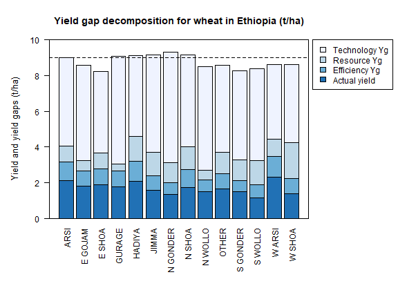
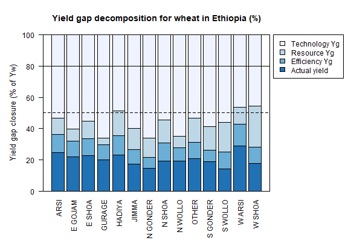

Workflow for Silva et al. (2017)¶
João Vasco Silva, CIMMYT-Zimbabwe
Introduction¶
Yield gap decomposition has been increasingly applied in agronomy to disentangle the impact of sub-optimal management on crop production and to identify agronomic measures to improve yields. To date, most applications refer to cereal crops (and some tuber and root crops) in a wide range of production systems worldwide, particularly in sub-Saharan Africa, South and Southeast Asia, and Northwest Europe. This notebook aims to formalize the R scripts used to decompose yield gaps across most of those applications making use of the framework introduced by Silva et al. (2017). Data collected by CIMMYT and EIAR for wheat in Ethiopia, previously used for yield gap analysis (Silva et al., 2021), are used here as an example. Before diving into the R scripts it is important to understand the key concepts and definitions involved in yield gap decomposition as these determine how the different yield levels and associated yield gaps are estimated.
The framework for yield gap decomposition described in this notebook considers four different yield levels (Silva et al., 2017). First, the water-limited potential yield (Yw) refers to the maximum yield that can be obtained under rainfed conditions in a well-defined, and relatively homogeneous, biophysical environment (van Ittersum et al., 2013). Yw can be simulated with crop growth models or derived from field trials with non-limiting levels of nutrients and pests, diseases, and weeds fully controlled. Second, the highest farmers’ yield (YHF) refer to the maximum yields (e.g. average above the 90th percentile of actual farmers’ yields) observed in a representative sample of farmers sharing similar biophysical conditions (weather and soils) and technologies adopted (e.g., varieties). Third, the technical efficient yield (YTEx) comprises the maximum yield that can be achieved by farmers in a given production ecology for a given input level and can be computed using methods of frontier analysis in combination with concepts of production ecology (Silva et al., 2017). Finally, the actual yield (Ya) refers to the yield in farmers’ fields as recorded in farm surveys.
{kind=link}
Figure 1. Visual illustration of the yield levels, and respective yield gaps, considered in the yield gap decomposition presented in this workflow. Source: Silva et al. (2017).
The total yield gap and three intermediate yield gaps can be estimated using the four yield levels previously described. The total yield gap is calculated as the difference between Yw and Ya. The efficiency yield gap is calculated as the difference between YTEx and Ya and it can be explained by crop management imperfections related to time, form, and/or space of the inputs applied. The resource yield gap is calculated as the difference between YHF and YTEx and captures the yield penalty due to a sub-optimal amount of inputs applied. Lastly, the technology yield gap is calculated as the difference between Yw and YHF, which can be explained by resource yield gaps of specific inputs and/or absence of certain technologies that would fully exploit the biophysical potential of the system. Please note Ya and the intermediate yield gaps can be expressed as a percentage of Yw, reflecting the current yield gap closure and the share of yield gap explained by each intermediate yield gap.
Load required R packages¶
First, we need to load the R packages needed to run this workflow.
# package names
packages <- c("frontier", "dplyr", "tidyr", "knitr", "car", "RColorBrewer", "DT")
#
# install packages
installed_packages <- packages %in% rownames(installed.packages())
if (any(installed_packages == FALSE)){
install.packages(packages[!installed_packages])}
## Installing package into 'C:/Users/JSILVA/OneDrive - CIMMYT/Documents/R/win-library/4.0'
## (as 'lib' is unspecified)
## Error in contrib.url(repos, "source"): trying to use CRAN without setting a mirror
#
# load packages
invisible(lapply(packages, function(x) suppressMessages(require(x, character.only=T, quietly=T, warn.conflicts=F))))
## Warning: package 'lmtest' was built under R version 4.0.5
## Warning: package 'dplyr' was built under R version 4.0.5
## Warning: package 'knitr' was built under R version 4.0.5
## Warning: package 'car' was built under R version 4.0.5
## Warning: package 'carData' was built under R version 4.0.5
## Warning in library(package, lib.loc = lib.loc, character.only = TRUE,
## logical.return = TRUE, : there is no package called 'DT'
Farmer field data¶
The first step is to load the farmer field data to be used for yield gap analysis. The data contain (a) primary data on self-reported Ya, management practices, and biophysical conditions at field level obtained through a household survey, and (b) secondary data obtained from spatial products using the GPS coordinates of the individual households. The household survey is a panel of households over two growing seasons (2009 and 2013). Type and sources of secondary data include: climate zones from the Global Yield Gap Atlas (van Wart et al., 2013), soil water properties from AfSIS-GYGA (Leenaars et al., 2017), agro-ecological zones for Ethiopia, and farming systems classification for Africa.
# read .csv file with data
file <- 'https://raw.githubusercontent.com/jvasco323/EiA_YGD_workflow/main/data-wheat-ethiopia.csv'
data <- read.csv(url(file))
#
# list variables of interest
str(data)
## 'data.frame': 3783 obs. of 42 variables:
## $ zone : chr "WEST SHOA" "WEST SHOA" "WEST SHOA" "WEST SHOA" ...
## $ zone_new : chr "W SHOA" "W SHOA" "W SHOA" "W SHOA" ...
## $ farming_system : chr "6. Highland mixed farming system" "6. Highland mixed farming system" "6. Highland mixed farming system" "6. Highland mixed farming system" ...
## $ aez : chr "M2" "M2" "M2" "M2" ...
## $ year : int 2009 2009 2009 2009 2009 2009 2009 2009 2009 2009 ...
## $ season_year : chr "Meher_2009" "Meher_2009" "Meher_2009" "Meher_2009" ...
## $ hhid : int 1 11 11 16 17 270 281 285 292 515 ...
## $ plotid : int 5 2 2 5 2 2 6 6 4 2 ...
## $ subplotid : int 1 4 3 1 3 1 1 1 1 1 ...
## $ subplotsize_ha : num 0.5 0.5 0.0625 1 1.5 0.5 0.25 0.25 1.5 0.5 ...
## $ subplot_own : chr "Rented-in" "Owned" "Owned" "Rented-in" ...
## $ subplot_manager : chr "Man" "Man" "Man" "Man" ...
## $ plotdist_min : num 10 5 2 15 10 5 15 30 5 5 ...
## $ crop : chr "Wheat_br" "Wheat_br" "Wheat_br" "Wheat_br" ...
## $ gyga_cz : int 5501 5501 5501 5501 5501 5501 5501 5501 5501 5501 ...
## $ gyga_gdd : num 6539 6539 6539 6539 6539 ...
## $ gyga_tseas : int 1208 1208 1208 1208 1208 1285 1200 1200 1200 1208 ...
## $ seed_kgha : num 206 250 192 64 33.3 ...
## $ variety : chr "Landrace" "unknown" "unknown" "unknown" ...
## $ gyga_ai : num 6544 6544 6544 6544 6544 ...
## $ gyga_av_water : int 9 9 9 9 9 7 7 7 7 9 ...
## $ soil_depth : chr "Deep" "Deep" "Medium" "Medium" ...
## $ soil_slope : chr "Medium" "Steep" "Steep" "Flat" ...
## $ waterlogging_yn : chr "No" "No" "No" "No" ...
## $ drought_yn : chr "No" "No" "Yes" "No" ...
## $ soilwatercons_yn : chr "Yes" "Yes" "Yes" "No" ...
## $ oxplough_freq : int 5 4 4 4 8 4 3 5 4 5 ...
## $ oxplough_freq_cat : chr ">Five" "Four" "Four" "Four" ...
## $ soil_fertility : chr "Poor" "Poor" "Poor" "Poor" ...
## $ nfert_kgha : num 32.3 41.3 51.7 32.3 21.5 ...
## $ pfert_kgha : num 10.04 20.07 16.06 10.04 6.69 ...
## $ manure_yn : chr "No" "No" "No" "No" ...
## $ residues_yn : chr "No" "Yes" "Yes" "Yes" ...
## $ previous_crop : chr "Cereal" "Cereal" "Cereal" "Cereal" ...
## $ herb_lha : num 0.4 2 4 1 0.2 ...
## $ handweeding_persdayha: num 24 8 64 20 16 0 16 28 0 22 ...
## $ weeding_freq : int 1 1 1 1 1 0 2 1 1 1 ...
## $ weeding_freq_cat : chr "One" "One" "One" "One" ...
## $ pesticide_yn : chr "No" "No" "No" "No" ...
## $ disease_incidence_yn : chr "No" "Yes" "No" "Yes" ...
## $ pest_incidence_yn : chr "Yes" "No" "No" "No" ...
## $ yield_tha : num 1.2 2.4 3.2 1 0.267 ...
Data manipulation¶
Some data transformations need to be done prior to the analysis. These include (a) re-leveling and re-classification of categorical variables, (b) log-transformation of continuous variables so that model coefficients can be interpreted as elasticities, and (c) fill or drop data not available. If needed, missing data for specific observations of a given variable can be filled with the average value for that variable. This is documented in the chunk of code below.
# create final data
data <- subset(data, yield_tha > 0)
data <- subset(data, residues_yn == "No" | residues_yn == "Yes")
data <- subset(data, soil_slope == "Flat" | soil_slope == "Medium" | soil_slope == "Steep")
data <- subset(data, zone_new != "")
data <- subset(data, oxplough_freq_cat == "<Two" |
oxplough_freq_cat == "Three" |
oxplough_freq_cat == "Four" |
oxplough_freq_cat == ">Five")
data <- subset(data, weeding_freq_cat == "None" |
weeding_freq_cat == "One" |
weeding_freq_cat == "Two" |
weeding_freq_cat == "Three+")
#
# fill NA values
data$seed_kgha[is.na(data$seed_kgha)] <- mean(data$seed_kgha, na.rm=T)
data$nfert_kgha[is.na(data$nfert_kgha)] <- 0
data$herb_lha[is.na(data$herb_lha)] <- 0
data$handweeding_persdayha[is.na(data$handweeding_persdayha)] <- 0
#
# reclassify categorical variables
data$variety = ifelse(data$variety != 'Landrace' & data$variety != 'unknown', 'Improved', data$variety)
data$variety = ifelse(data$variety == 'Landrace', 'unknown', data$variety)
data$nfert_yn = ifelse(data$nfert_kgha == 0, 'N0', 'N+')
data$weeding_yn = ifelse(data$herb_lha == 0 & data$handweeding_persdayha == 0, 'No', 'Yes')
#
# copy df with transformed data
data_new <- data
#
# replace 0 with small value for log-transformation
data_new[data_new == 0] = 0.0001
#
# log-transform continuous variables
vars1 <- c('gyga_gdd', 'gyga_tseas', 'seed_kgha', 'gyga_ai', 'gyga_av_water', 'nfert_kgha', 'pfert_kgha',
'herb_lha', 'handweeding_persdayha', 'yield_tha')
log_f <- function(x){log(x)}
data_new[,vars1] <- lapply(data_new[,vars1], log_f)
#
# set categorical variables to factor
vars2 <- c('farming_system', 'aez', 'zone_new', 'season_year', 'variety', 'soil_depth', 'soil_fertility',
'waterlogging_yn', 'drought_yn', 'soilwatercons_yn', 'manure_yn', 'residues_yn', 'previous_crop',
'oxplough_freq_cat', 'weeding_yn', 'pesticide_yn', 'disease_incidence_yn', 'pest_incidence_yn')
data_new[,vars2] <- lapply(data_new[,vars2], factor)
Descriptive statistics¶
Descriptive statistics of the actual yield and (continuous) crop management variables used in the analysis for the 2 years of the survey are provided below. Actual yield of wheat across Ethiopia was on average 1.76 t/ha in 2009 and 1.77 t/ha in 2013. N and P application rates were on average 48 kg N/ha and 20 kg P/ha, respectively. Plot sizes were on average 0.45 ha in 2009 and 0.40 ha in 2013.
Variable |
Mean 2009 |
Mean 2013 |
StDev 2009 |
StDev 2013 |
|---|---|---|---|---|
Hand-weeding (person-day/ha) |
21.84 |
24.28 |
30.46 |
35.46 |
Herbicide use (L/ha) |
0.5 |
0.59 |
0.83 |
0.88 |
N application rate (kg N/ha) |
48.07 |
48.99 |
40.53 |
32.04 |
P application rate (kg P/ha) |
19.63 |
20.34 |
13.93 |
12.36 |
Seed rate (kg/ha) |
192.88 |
195.43 |
79.85 |
95.66 |
Plot size (ha) |
0.45 |
0.4 |
0.39 |
0.3 |
Actual wheat yield (t/ha) |
1.76 |
1.77 |
1.13 |
1.09 |
Efficiency yield gap¶
A stochastic frontier model is needed to estimate YTEx and the efficiency yield gap. Stochastic frontier analysis is an econometric technique widely used for benchmarking different production units (Kumbhakar & Lovell, 2000). Stochastic frontiers differentiate two random errors: technical inefficiency, ui (translated in agronomic terms as the efficiency yield gap), and random noise, vi, hence separating the effects of sub-optimal crop management (ui) from random noise (vi) in the response variable. For yield gap analysis, the variables used to estimate stochastic frontiers need to be selected based on principles of production ecology (van Ittersum & Rabbinge, 1997) to capture the impact of growth-defining, -limiting, and -reducing factors on crop yield.
It is important to fit an ordinary least squares (OLS) regression prior to fit a stochastic frontier. Although both models have the same structure, and should exhibit similar signs and effect sizes for the different variables, OLS regressions allow the computation of Variance Inflation Factors (VIF) and hence to assess multicolinearity between variables. As a rule-of-thumb, VIF values above 10 indicate multicolinearity between variables, which is helpful to screen the final set of variables to be included in the model (see: https://en.wikipedia.org/wiki/Variance_inflation_factor). Please note the VIF values and parameter estimates are not shown, but can be obtained by removing the symbol # in the chunk of code below.
# fit ols regression model
ols <-
lm(yield_tha ~
season_year + gyga_gdd + gyga_tseas + seed_kgha + variety +
gyga_ai + gyga_av_water + soil_depth + soil_fertility + waterlogging_yn + drought_yn + soilwatercons_yn +
nfert_kgha + manure_yn + residues_yn + previous_crop + oxplough_freq_cat +
herb_lha + handweeding_persdayha + weeding_yn + pesticide_yn + disease_incidence_yn + pest_incidence_yn,
data=data_new)
#
# check vif values
# vif(ols)
#
# see parameter estimates
# summary(ols)
The OLS regression fitted above can now be fitted as a stochastic frontier model with a Cobb-Douglas functional form. The Cobb-Douglas functional form takes only the first-order terms and is thus the simplest model that can be fit to the data. Two functions from the R package frontier are used here: (1) the function sfa() is used to estimate model parameters and, (2) the function efficiencies() is used to estimate the technical efficiency scores (or the equivalent efficiency yield gap in agronomy). Further information about the theoretical background of these functions can be found in Battese & Coelli (1992). This is illustrated in the chunk of code below, which results are the same as those presented in Table 3 of Silva et al. (2021) for the pooled data. The reader is thus referred to that manuscript for further interpretation of model coefficients.
# fit cobb-douglas stochastic frontier
sfa_cd <-
sfa(yield_tha ~
season_year + gyga_gdd + gyga_tseas + seed_kgha + variety +
gyga_ai + gyga_av_water + soil_depth + soil_fertility + waterlogging_yn + drought_yn + soilwatercons_yn +
nfert_kgha + manure_yn + residues_yn + previous_crop + oxplough_freq_cat +
herb_lha + handweeding_persdayha + weeding_yn + pesticide_yn + disease_incidence_yn + pest_incidence_yn,
data=data_new)
#
# add technical efficiency score to data frame
data_new$te_score_cd = efficiencies(sfa_cd, asInData=T)
#
# see parameter estimates
summary(sfa_cd)
## Error Components Frontier (see Battese & Coelli 1992)
## Inefficiency decreases the endogenous variable (as in a production function)
## The dependent variable is logged
## Iterative ML estimation terminated after 33 iterations:
## log likelihood values and parameters of two successive iterations
## are within the tolerance limit
##
## final maximum likelihood estimates
## Estimate Std. Error z value Pr(>|z|)
## (Intercept) 9.7733888 1.1050740 8.8441 < 2.2e-16 ***
## season_yearMeher_2013 -0.0539923 0.0264810 -2.0389 0.041460 *
## gyga_gdd -0.5840446 0.0909876 -6.4189 1.372e-10 ***
## gyga_tseas -0.3252022 0.0525343 -6.1903 6.006e-10 ***
## seed_kgha 0.0976523 0.0123652 7.8974 2.849e-15 ***
## varietyunknown -0.0018340 0.0231824 -0.0791 0.936944
## gyga_ai -0.3311850 0.0594151 -5.5741 2.488e-08 ***
## gyga_av_water -0.0080901 0.0412886 -0.1959 0.844658
## soil_depthMedium -0.0742006 0.0232508 -3.1913 0.001416 **
## soil_depthShallow -0.0812014 0.0291497 -2.7857 0.005342 **
## soil_fertilityMedium -0.0568591 0.0203025 -2.8006 0.005101 **
## soil_fertilityPoor -0.1627704 0.0309154 -5.2650 1.402e-07 ***
## waterlogging_ynYes -0.3472614 0.0379737 -9.1448 < 2.2e-16 ***
## drought_ynYes -0.4474776 0.0456593 -9.8004 < 2.2e-16 ***
## soilwatercons_ynYes 0.0585665 0.0275969 2.1222 0.033820 *
## nfert_kgha 0.2723653 0.0126521 21.5272 < 2.2e-16 ***
## manure_ynYes 0.0373056 0.0261372 1.4273 0.153494
## residues_ynYes 0.0316401 0.0270959 1.1677 0.242925
## previous_cropLegume 0.0220438 0.0244585 0.9013 0.367442
## previous_cropOther 0.1230667 0.0264684 4.6496 3.326e-06 ***
## oxplough_freq_cat>Five 0.0534308 0.0580652 0.9202 0.357475
## oxplough_freq_catFour -0.0126670 0.0569799 -0.2223 0.824075
## oxplough_freq_catThree -0.1015532 0.0573738 -1.7700 0.076722 .
## herb_lha 0.0134322 0.0029268 4.5894 4.446e-06 ***
## handweeding_persdayha -0.0038850 0.0020551 -1.8905 0.058697 .
## weeding_ynYes 0.0369644 0.0496531 0.7445 0.456602
## pesticide_ynYes 0.1208168 0.0495391 2.4388 0.014735 *
## disease_incidence_ynYes -0.3161391 0.0314308 -10.0582 < 2.2e-16 ***
## pest_incidence_ynYes -0.0857481 0.0733460 -1.1691 0.242367
## sigmaSq 0.5977253 0.0250709 23.8414 < 2.2e-16 ***
## gamma 0.7421739 0.0246107 30.1565 < 2.2e-16 ***
## ---
## Signif. codes: 0 '***' 0.001 '**' 0.01 '*' 0.05 '.' 0.1 ' ' 1
## log likelihood value: -3066.353
##
## cross-sectional data
## total number of observations = 3694
##
## mean efficiency: 0.633058
The simple Cobb-Douglas model fitted above can be made more complex by adding second-order terms in what is known as a stochastic frontier model with a translog functional form. This functional form is most flexible as it considers non-linear relations between variables (squared terms and interactions). Yet, the translog functional form should only be fitted last to assess non-linear effects on crop yield as the large number of parameters make it difficult to interpret. The functions sfa() and efficiencies() are used again to estimate model parameters and technical efficiency scores, respectively. Please note this output is not displayed given the large number of parameters involved. To do so, kindly remove the symbol # in the chunk of code below.
# fit translog stochastic frontier
sfa_tl <-
sfa(yield_tha ~
# 1st order terms (linear)
season_year + gyga_gdd + gyga_tseas + seed_kgha + variety +
gyga_ai + gyga_av_water + soil_depth + soil_fertility + waterlogging_yn + drought_yn + soilwatercons_yn +
nfert_kgha + manure_yn + residues_yn + previous_crop + oxplough_freq_cat +
herb_lha + handweeding_persdayha + weeding_yn + pesticide_yn + disease_incidence_yn + pest_incidence_yn +
# 2nd order terms (squared)
I(0.5*gyga_gdd^2) + I(0.5*gyga_tseas^2) + I(0.5*seed_kgha^2) +
I(0.5*gyga_ai^2) + I(0.5*gyga_av_water^2) +
I(0.5*nfert_kgha^2) +
I(0.5*herb_lha^2) + I(0.5*handweeding_persdayha^2) +
# 2nd order terms (interactions)
I(gyga_gdd*gyga_tseas) + I(gyga_gdd*seed_kgha) + I(gyga_gdd*gyga_ai) + I(gyga_gdd*gyga_av_water) +
I(gyga_gdd*nfert_kgha) + I(gyga_gdd*herb_lha) + I(gyga_gdd*handweeding_persdayha) +
I(gyga_tseas*seed_kgha) + I(gyga_tseas*gyga_ai) + I(gyga_tseas*gyga_av_water) + I(gyga_tseas*nfert_kgha) +
I(gyga_tseas*herb_lha) + I(gyga_tseas*handweeding_persdayha) +
I(seed_kgha*gyga_ai) + I(seed_kgha*gyga_av_water) + I(seed_kgha*nfert_kgha) + I(seed_kgha*herb_lha) +
I(seed_kgha*handweeding_persdayha) +
I(gyga_ai*gyga_av_water) + I(gyga_ai*nfert_kgha) + I(gyga_ai*herb_lha) + I(gyga_ai*handweeding_persdayha) +
I(gyga_av_water*nfert_kgha) + I(gyga_av_water*herb_lha) + I(gyga_av_water*handweeding_persdayha) +
I(nfert_kgha*herb_lha) + I(nfert_kgha*handweeding_persdayha) +
I(herb_lha*handweeding_persdayha),
data=data_new)
#
# add technical efficiency score to data frame
data_new$te_score_tl = efficiencies(sfa_tl, asInData=T)
#
# see parameter estimates
# summary(sfa_tl)
The two chunks of code above added two new columns to the original data frame, namely te_score_cd and te_score_tl. These technical efficiency scores range between 0 and 1 and indicate how extra yield could have been produced for the observed level of inputs. For instance, if the technical efficiency score is equal to 0.2 for a specific field, then that field only produced 20% of what it could have produced with the level of inputs it received. The efficiency yield gap is the agronomic equivalent of technical inefficiency when variables used in the stochastic frontier analysis are selected based on concepts of production ecology. Thus, YTEx and the efficiency yield gap can be estimated from the technical efficiency scores as follows.
# estimate efficiency yield gap (%)
data_new['efficiency_yg'] = 100 - (data_new['te_score_cd'] * 100)
#
# select relevant columns
data_new <- data_new[c('zone_new', 'season_year', 'hhid', 'plotid', 'subplotid', 'te_score_cd', 'te_score_tl',
'efficiency_yg')]
#
# merge the new columns to original data frame
data <- merge(data, data_new, by=c('zone_new', 'season_year', 'hhid', 'subplotid'), all.x=T)
#
# estimate technical efficiency yield (t/ha)
data['ytex_tha'] = data['yield_tha'] / data['te_score_cd']
Resource yield gap¶
Before calculating YHF, it is useful to categorize the farm-fields into highest-, average-, and lowest-yielding based on the distribution of the actual yield. Highest-yielding fields were identified as the observations above the 90th percentile of Ya and the highest farmers’ yields (YHF) were computed as the mean Ya for these fields. Similarly, the lowest-yielding fields were identified as the observations below the 10th percentile of Ya (YLF), and the average-yielding fields as the observations between the 10th and the 90th percentile of Ya (YAF).
The field classification described above needs to be done for a given biophysical unit, composed in this case of a unique year x climate zone x soil fertility combination, to avoid confounding between environmental conditions and crop management. For wheat in Ethiopia, ‘year’ refers to the Meher seasons of 2009 and 2013, ‘climate zone’ refers to the units included in the climate delineation scheme of GYGA, and ‘soil fertility’ refers to farmers’ own assessment of the fertility of their soil. Variety type was not considered in the the field classification because there was no significant yield difference between variety types (see results of the Cobb-Douglas stochastic frontier model above), but it should be considered otherwise.
# create an empty data frame
data_final <- data.frame()
#
# create loop per year
for(yr in unique(data$year)){
subset_year <- subset(data, year == yr)
#
# create loop per climate zone
for(cz in unique(subset_year$gyga_cz)){
subset_cz <- subset(subset_year, gyga_cz == cz)
#
# create loop per soil type
for(soil in unique(subset_cz$soil_fertility)){
subset_soil <- subset(subset_cz, soil_fertility == soil)
# create column with field class based on yield distribution
subset_soil$field_class <- ifelse(subset_soil$yield_tha >= quantile(subset_soil$yield_tha, 0.90),
'YHF', '')
subset_soil$field_class <- ifelse(subset_soil$yield_tha <= quantile(subset_soil$yield_tha, 0.10),
'YLF', subset_soil$field_class)
subset_soil$field_class <- ifelse(subset_soil$yield_tha > quantile(subset_soil$yield_tha, 0.10) &
subset_soil$yield_tha < quantile(subset_soil$yield_tha, 0.90),
'YAF', subset_soil$field_class)
#
# subset highest yielding fields only
yhf <- subset(subset_soil, field_class == 'YHF')
#
# add column with yhf in t/ha to data frame
subset_soil['yhf_tha'] <- mean(yhf$yield_tha, na.rm=T)
#
# bind all individual fields into single data frame
data_final <- rbind(data_final, subset_soil)
}}}
The chunk of code above implements the classification of fields as highest-, average-, and lowest-yielding fields and the estimation of YHF for each field in the data set. The variables used for this classification (i.e., year, climate zone, and soil fertility class) were the most suitable for this specific example, meaning it is possible to use other types of variables to control for differences in biophysical conditions across fields (e.g., landscape position or slope), which will depend on the data set and cropping systems at stake.
Technology yield gap¶
The water-limited yield (Yw) is the yield benchmark for rainfed crops (van Ittersum et al., 2013), which is the case of wheat in Ethiopia. Spatial-explicit data on Yw can be obtained from different sources and a tier-approach is proposed for that. The most preferred data source on yield ceilings is GYGA from which data can be sourced through http://www.yieldgap.org (an API to GYGA can also be created on a demand basis). If the required data are not available in GYGA, yield ceilings can be simulated with crop models or obtained through literature review (least preferred option). Simulated yields in GYGA refer to most recently released high-yield crop cultivars, grown in pure stands. Yet, yield ceilings should be simulated for different varieties when data are available and different varieties are known to have different yield potential - see Silva et al. (2022) for an example of how to consider yield gaps due to variety choice in the yield gap decomposition framework used here.
The chunk of code below combines the water-limited yield data retrieved from GYGA based on the GPS coordinates of the surveyed households to the main database containing all field level data. The steps needed to retrieve these data from the GYGA API are shown in a companion notebook. Note: the water-limited yields presented here are slightly different than those presented in Silva et al., (2021) due to different criteria used to retrieve these data in the companion script.
# load dataframe with yw data
file <- 'https://raw.githubusercontent.com/jvasco323/EiA_YGD_workflow/main/data-gps-coordinates-final.csv'
yw_data <- read.csv(url(file))
yw_data <- yw_data[c('hhid', 'GYGA_CZ', 'Yw_average', 'Yw_2009', 'Yw_2013')]
yw_data <- unique(yw_data)
#
# merge yw data with the rest of the data
data_final <- merge(data_final, yw_data, by='hhid', all.x=T)
#
# get yw per field
data_final$yw_tha <- ifelse(data_final$year == 2009, data_final$Yw_2009, data_final$Yw_2013)
#
# summarize of yw data
summary_yw <- unique(data_final[c('GYGA_CZ', 'Yw_average', 'Yw_2009', 'Yw_2013')])
summary_yw <- aggregate(summary_yw[c(2:4)], by=list('GYGA_CZ'=summary_yw$GYGA_CZ), FUN=mean)
summary_yw[c(2:4)] <- round(summary_yw[c(2:3)], 1)
colnames(summary_yw)[1] <- 'Climate zone'
colnames(summary_yw)[2] <- 'Yw long-term (t/ha)'
colnames(summary_yw)[3] <- 'Yw 2009 (t/ha)'
colnames(summary_yw)[4] <- 'Yw 2013 (t/ha)'
DT::datatable(summary_yw,
options=list(pageLength=5,
lengthMenu=c(5, 10, 15)))
## Error in loadNamespace(name): there is no package called 'DT'
Yield gap decomposition¶
The four yield levels needed for yield gap decomposition were calculated in the previous section. At last, the intermediate yield gaps need to be estimated in t/ha and in terms of yield gap closure, i.e., relative to Yw. This what the chunk of code below implements. With all this information in hand, a summary figure showing the yield gap decomposition for units of interest can be produced. This is exemplified here for different administrative regions and for different farming systems.
Below is the code for estimating the yield gaps in t/ha. Please note automation is needed for data sets spanning over many years, but the general principle is the same.
# total yield gap in t/ha
data_final['yg_total_2009'] <- data_final['Yw_2009'] - data_final['yield_tha']
data_final['yg_total_2013'] <- data_final['Yw_2013'] - data_final['yield_tha']
data_final['yg_total'] <- ifelse(data_final$year == 2009, data_final$yg_total_2009,
data_final$yg_total_2013)
#
# efficiency yield gap in t/ha
data_final['eff_yg_tha_2009'] <- data_final['ytex_tha'] - data_final['yield_tha']
data_final['eff_yg_tha_2013'] <- data_final['ytex_tha'] - data_final['yield_tha']
data_final['eff_yg_tha'] <- ifelse(data_final$year == 2009, data_final$eff_yg_tha_2009,
data_final$eff_yg_tha_2013)
#
# resource yield gap in t/ha
data_final['res_yg_tha_2009'] <- data_final['yhf_tha'] - data_final['ytex_tha']
data_final['res_yg_tha_2013'] <- data_final['yhf_tha'] - data_final['ytex_tha']
data_final['res_yg_tha'] <- ifelse(data_final$year == 2009, data_final$res_yg_tha_2009,
data_final$res_yg_tha_2013)
#
# technology yield gap in t/ha
data_final['tech_yg_tha_2009'] <- data_final['Yw_2009'] - data_final['yhf_tha']
data_final['tech_yg_tha_2013'] <- data_final['Yw_2013'] - data_final['yhf_tha']
data_final['tech_yg_tha'] <- ifelse(data_final$year == 2009, data_final$tech_yg_tha_2009,
data_final$tech_yg_tha_2013)
#
# aggregate absolute yield gaps by zone
absolute <- aggregate(data_final[c('yield_tha', 'eff_yg_tha', 'res_yg_tha', 'tech_yg_tha')], by=list('zone_new'=data_final$zone_new), FUN=mean, na.rm=T)
absolute_t <- t(absolute)
colnames(absolute_t) <- absolute$zone_new
absolute_t <- absolute_t[-1, ]
#
# make barplot
pal <- rev(palette(brewer.pal(n=4, name="Blues")))
pal <- rev(palette(brewer.pal(n=4, name="Blues")))
par(mfrow=c(1,1), mar=c(7,5,4,9), yaxs='i')
{barplot(absolute_t,
las=2,
cex.lab=1.1,
ylim=c(0, 10),
ylab='Yield and yield gaps (t/ha)',
main='Yield gap decomposition for wheat in Ethiopia (t/ha)',
col=pal)
abline(h=9, col="black", lty=2)
legend("topright",
inset=c(-0.325, 0),
legend=c("Technology Yg", "Resource Yg", "Efficiency Yg", "Actual yield"),
fill=c(palette(brewer.pal(n=4, name="Blues"))),
xpd=TRUE)
box()}

Below is the code for estimating the yield gap closure relative to Yw. Please note automation is needed for data sets spanning over many years, but the general principle is the same.
# yield gap closure relative to yw
data_final['yg_closure_2009'] <- (data_final['yield_tha'] / data_final['Yw_2009']) * 100
data_final['yg_closure_2013'] <- (data_final['yield_tha'] / data_final['Yw_2013']) * 100
data_final['yg_closure'] <- ifelse(data_final$year == 2009, data_final$yg_closure_2009,
data_final$yg_closure_2013)
#
# ytex relative to yw
data_final['eff_yg_2009'] <- (data_final['ytex_tha'] / data_final['Yw_2009']) * 100
data_final['eff_yg_2013'] <- (data_final['ytex_tha'] / data_final['Yw_2013']) * 100
data_final['ytex_closure'] <- ifelse(data_final$year == 2009, data_final$eff_yg_2009,
data_final$eff_yg_2013)
#
# yhf relative to yw
data_final['res_yg_2009'] <- (data_final['yhf_tha'] / data_final['Yw_2009']) * 100
data_final['res_yg_2013'] <- (data_final['yhf_tha'] / data_final['Yw_2013']) * 100
data_final['yhf_closure'] <- ifelse(data_final$year == 2009, data_final$res_yg_2009,
data_final$res_yg_2013)
#
# intermediate yield gaps
data_final$eff_yg <- data_final$ytex_closure - data_final$yg_closure
data_final$res_yg <- data_final$yhf_closure - data_final$ytex_closure
data_final$tech_yg <- 100 - data_final$yhf_closure
#
# aggregate absolute yield gaps by zone
relative <- aggregate(data_final[c('yg_closure', 'eff_yg', 'res_yg', 'tech_yg')], by=list('zone_new'=data_final$zone_new), FUN=mean, na.rm=T)
relative_t <- t(relative)
colnames(relative_t) <- relative$zone_new
relative_t <- relative_t[-1, ]
#
# make barplot
par(mfrow=c(1,1), mar=c(7,5,4,9), yaxs='i')
{barplot(relative_t,
las=2,
cex.lab=1.1,
ylim=c(0, 100),
ylab='Yield gap closure (% of Yw)',
main='Yield gap decomposition for wheat in Ethiopia (%)',
col=pal)
abline(h=50, col="black", lty=2)
abline(h=80, col="black", lty=1)
legend("topright",
inset=c(-0.325, 0),
legend=c("Technology Yg", "Resource Yg", "Efficiency Yg", "Actual yield"),
fill=c(palette(brewer.pal(n=4, name="Blues"))),
xpd=T)
box()}

Recommendations¶
The work flow described in this notebook was applied to a wide range of (cereal) cropping systems worldwide. The relative importance of the three intermediate yield gaps, as well as inter-linkages between them, depend on the degree of yield gap closure (i.e., level of intensification) of the cropping system/dataset in question. The experiences learned so far with the application of this framework across contrasting cropping systems can be summarized as follows:
Low yielding cereal crops in Ethiopia and Zambia: Large importance of the technology yield gap, which is often confounded with the resource yield gap, because inputs used in highest yielding fields is way below the inputs needed to reach the water-limited yield. Possible confounds between the technology and efficiency yield gaps is also possible when resource-use efficiency observed on-farm is way below what is agronomically possible (due to e.g., poor crop establishment or poor management of pests, diseases, and weeds). For further examples and information see Assefa et al. (2020), Silva et al., (2021), and Silva et al. (2023).
Intermediate yielding cereal crops in the Philippines: Similar relative importance of efficiency, resource, and technology yield gaps. This means that yield gaps in such cropping systems are explained by a multitude of factors: sub-optimal time, space, form, and rate of input use and technologies used on-farm not being able to reach the potential or water-limited yield. Such patterns have also been observed for other rice cropping systems in Southeast Asia (e.g., Thailand). For further examples and information see Silva et al. (2017) and Silva et al. (2022).
High yielding cereal crops in the Netherlands and NW India: Small resource yield gap and the also small total yield gap is equally explained by efficiency and technology yield gaps. It is questionable to focus only on explaining yield gaps in such cropping systems, as often there is scope to reduce input use without compromising yield. It is thus important to complement such analysis with studies on resource-use efficiency, and to consider pests, diseases, and weeds as these are often responsible for the small yield gaps observed. For further examples and information see Silva et al. (2017) and Nayak et al. (2022).
The framework has limitations that users must be aware of. Firstly, the framework takes a production perspective and does not consider profitability or links to policy explicitly. An example on how to do so can be found in van Dijk et al. (2017). Secondly, yield ceilings only consider a limited set of climatic, edaphic, and management factors, which might overestimate the yields (and hence the technology yield gap) that can potentially be obtained in practice. For instance, soil acidity can be a serious constraint to crop yields in some areas and such effects are not captured in the yield ceilings simulated (Silva et al., 2023). It is thus recommended to compare the simulated yield ceilings against experimental trial data under optimal conditions. Thirdly, conclusions derived from the interpretation of resource yield gaps must be contextualized with knowledge about the farming system. For instance, promoting greater amounts of inputs might be detrimental to farmers in dryland areas with erratic rainfall (Silva et al., 2023) whereas in other regions promoting increased fertilizer use might lead to increased disease pressure (Silva et al., 2022). Lastly, it is difficult to derive concrete recommendations to narrow efficiency yield gaps as the associated crop management to do so is highly context specific. Further research is on-going to improve some of these aspects.
Acknowledgments¶
I thank Martin van Ittersum (WUR-PPS), Andy McDonald (Cornell CALS) and Johan Ninanya (CIP-Peru) for constructive comments in an earlier version of this workflow and Marloes van Loon (WUR-PPS) for retrieving the yield ceiling data from the Global Yield Gap Atlas. The development of this notebook was possible thanks to the financial support from the OneCGIAR initiative on Excellence in Agronomy. For further support and questions on how to implement this workflow to other data sets should be addressed to J.V. Silva (j.silva@cgiar.org).